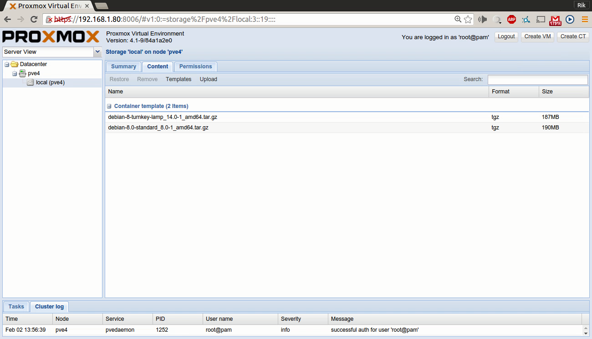

Click the "launch" button below to have a (very superficial) tour of the Proxmox VE 4.1 Web admin interface, "pve-manager".
The tour will launch in a new tab.
Keep in mind, of course, that it is not complete. It's a draft of something I intend to put together more "professionally" in coming weeks.
The final version will be as close to fully elaborated as the interface itself allows.
